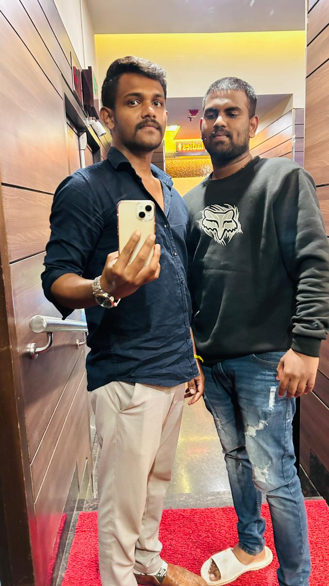

😍😍😍😍😍.
 Home whishes memories
the countless adventures we embarked on as kids!
From building pillow forts to sneaking cookies from the jar, our mischief knew no bounds.
Each memory is etched in my heart, a testament to the joy and innocence of our shared childhood. Remember the secrets we whispered under the covers, promising to keep them forever? Those secrets created a bond that goes beyond words. They were the foundation of the trust that defines our relationship.
Our home echoed with laughter, thanks to the countless inside jokes and humorous escapades.
Your sense of humor has been a constant source of joy, turning even the mundane into memorable moments. Here's to the laughter that binds us.
Journey Through Milestones (Word Count: 1200)
From school projects to late-night study sessions, I've witnessed your dedication and hard work. Your academic triumphs are not just yours; they are a source of pride for our entire family. Cheers to your achievements and the knowledge you've gained along the way. As you carved your path in the professional world, I stood witness to your growth and accomplishments. Your career milestones are a testament to your skills, determination, and the mark you're leaving on the world. Beyond the academic and professional, your personal achievements have been remarkable. Whether it's learning a new skill, conquering a fear, or embracing a new passion, your journey of self-discovery is inspiring.
Lessons Learned Together (Word Count: 1500)
Life threw challenges our way, but together, we faced them with resilience. Each obstacle became an opportunity to learn and grow. Your strength in challenging times has been a guiding light for me. In moments of joy and sorrow, your compassion and empathy shone through. Your ability to understand others, share in their joys, and offer comfort in times of need is a testament to the beautiful soul you are. Our shared experiences have taught us the importance of family. Through thick and thin, family stands by us. Your unwavering support and the sense of belonging we share make the bonds of family truly special.
Celebrating Unique Qualities (Word Count: 1200)
Your sense of humor has been a beacon of light in both ordinary and challenging times. The ability to find joy in the simplest things is a gift that makes every day brighter. Kindness is a strength, and you embody it effortlessly. Your willingness to help, your generosity, and the kindness you extend to others create a ripple effect of positivity. Life's challenges may be tough, but your resilience is tougher. Your ability to navigate storms with grace, to rise above adversity, is a testament to the strength within you.
Wishing for Future Adventures (Word Count: 1500)
As you stand on the threshold of a new year, I wish for you the pursuit of dreams. May you chase your passions, embrace new opportunities, and find fulfillment in every endeavor. Change is the only constant, and with each passing year, new chapters unfold. Embrace the changes, learn from them, and let them be stepping stones to even greater heights. May the coming year bring moments that strengthen our bonds further. Whether through shared adventures, quiet conversations, or simply being there for each other, may our connection continue to deepen.
Overflowing Gratitude and Love (Word Count: 1000)
In the tapestry of life, each shared moment is a vibrant thread. I am grateful for the countless moments we've shared—moments that define our unique relationship. You're not just a brother; you're a confidant, a friend, and a pillar of support. The love we share is a treasure, and I cherish it more with each passing day. As you blow out the candles, know that each flame represents a wish filled with love. May your path be illuminated with love, joy, and the warmth of family. Happy Birthday, dear brother!